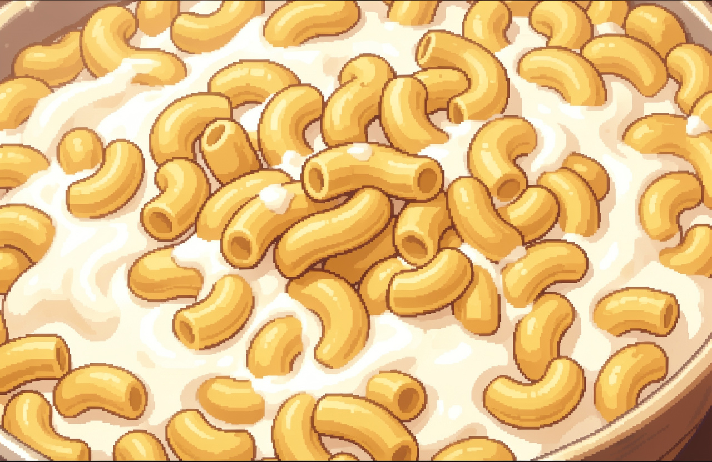
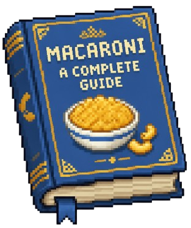
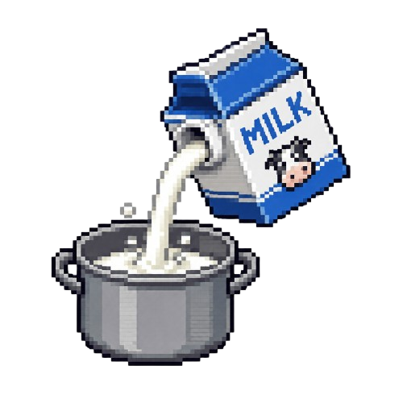
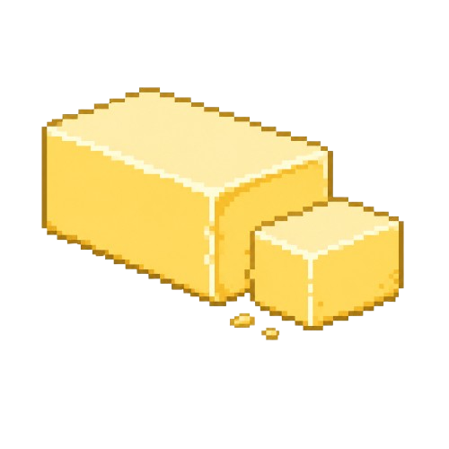
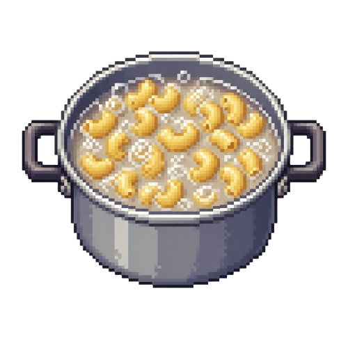
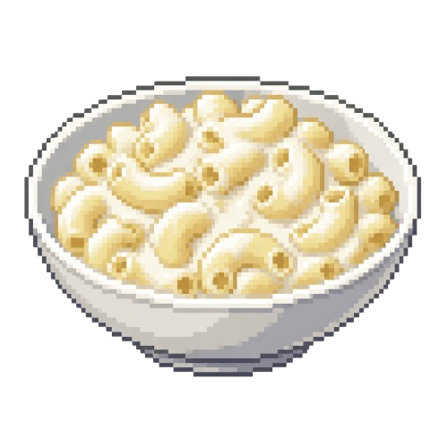

En säljande del om boken
De flesta böcker om mat handlar om exotiska råvaror, komplicerade tekniker eller ambitiösa kockar med starka åsikter. Den här boken handlar om något betydligt viktigare: en kastrull vit sås. Genom sju noggrant undersökta kapitel förklaras varför stuvade makaroner inte bara är en maträtt, utan sannolikt också det mest genomtänkta som någonsin serverats på en skoltallrik. Forskare har inte kunnat motbevisa detta. De har heller inte försökt särskilt hårt.
Innehåll
-

Kapitel 1: Mjölken förutsåg ingenting
Det hela börjar, som allt förnuftigt gör, med ett kastrull och en djup, obesvarad fråga: hur mycket mjölk är egentligen "lagom"? Ingen visste. Ingen vet fortfarande. Kapitlet försöker ändå.
-

Kapitel 2: Redet av smör
En grundlig genomgång av smörets filosofiska betydelse, samt en utredning av måttet "en klick", ett mått som ingen kokbok någonsin lyckats definiera exakt.
-

Kapitel 3: Makaronernas uppror
Om det ögonblick då makaronerna, av skäl som fortfarande utreds, bestämde sig för att koka över exakt när ingen tittade.
-
Kapitel 4: Andra folkslags försök
En översiktlig och något nedlåtande genomgång av hur andra länder har försökt efterlikna rätten, oftast genom att i onödan tillsätta ost, sätta in den i ugnen, eller på annat sätt komplicera något som redan var perfekt löst.
-

Kapitel 5: Rätt konsistens, en gång för alla
Om det exakta ögonblick då såsen slutar vara "för rinnig" och innan den blir "för tjock", ett tidsfönster så kort att forskarna fortfarande inte kunnat bevisa dess existens.
-
Kapitel 6: Efteråt, och varför ingenting någonsin blir sig likt
Vad har franska revolutionen, månlandningen och upptäckten av makaroner gemensamt? Detta och mycket mer förklaras i den rafflande avslutningen på boken, som också innehåller en oväntad twist.